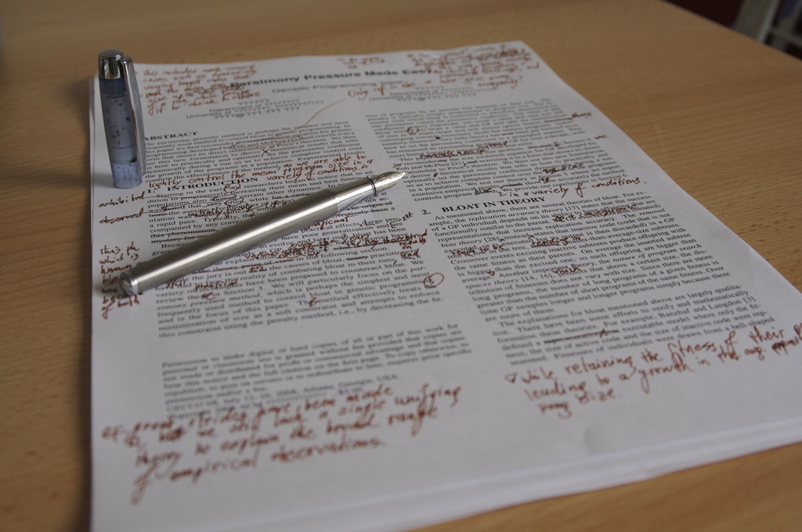

JavaScript
http://mbranko.github.io/webkurs
Ovo je deo web kursa
Literatura
- JavaScript Programmers Reference
- JavaScript: The Good Parts
- JavaScript Guide od Mozilla Developers Network.
- Code Academy sa interaktivnim JavaScript lekcijama.
- Khan Academy ima puno informacija o crtanju i animaciji.
Sadržaj
- JavaScript: obične stvari
- JavaScript: neobične stvari
- JavaScript: The Good Parts
- ECMAScript 6
Istorija
- 1995: Brendan Eich kreirao jezik Mocha za Netscape
- rename: Mocha -> LiveScript -> JavaScript
- "Java" u imenu iz marketinških razloga
- 1996: predat na standardizaciju u ECMA
- 1997: ECMA-262: ECMAScript
- 1998: ECMAScript 2
- 1999: ECMAScript 3
- 2000: JavaScript 2 / ECMAScript 4
- Microsoft ignorisao, imao svoje Jscript i vbscript jezike
- nije zaživeo
- 2005: Mozilla ulazi u Ecma
- Macromedia Flash: ActionScript 3
- Adobe preuzima Macromedia
- 2005: pojam AJAX
- nastanak jQuery, Prototype, Mootools, Dojo
- 2009: ECMAScript 5
- čak i Microsoft podržao
- 2015: ECMAScript 6
JavaScript nastao za 10 dana
Konfuzni zahtevi rezultovali biserima
- automatsko dodavanje tačka-zarez
- automatska konverzija tipova
- nema block scoping
- nema klase
- nema module
- neobično nasleđivanje
Neke osobine se kasnije pokazale kao dobre :)
JavaScript: obične stvari
script tag
Možemo mešati JavaScript i HTML. Tag script sadrži JavaScript u HTML dokumentu.
<script>
// ovde pišemo JavaScript kod
</script>
script tag
Kao i CSS, dugačak JavaScript kod možemo smestiti u poseban fajl.
<script src="path/to/file.js"></script>
Prvi primer
Snimiti ovaj HTML fajl pod imenom index.html i otvoriti u čitaču.
<!DOCTYPE html>
<html>
<head>
<title>Test stranica</title>
</head>
<body>
<p>Ovo je prvi JavaScript kod.</p>
<script>
alert('Hello World!');
console.log('Secret message');
</script>
</body>
</html>
Konzola u čitaču

Otvaranje konzole za Chrome:
- Windows/Linux: Ctrl + Shift + J
- Mac: Cmd + Option + J
Naredbe
JavaScript program se sastoji od naredbi
console.log('Hello World!');
console.log('I am glad to meet you');
console.log('I am fuzzy');
Komentari
Komentari u kodu se igonorišu prilikom izvršavanja.
/*
Višelinijski
komentar
*/
console.log('Hello World!'); // jednolinijski komentar
Ispisivanje poruka
Otvori prozor sa porukom.
alert('Hello World!');
Ispiši poruku na konzoli.
console.log('Hello World!');
Dodaj tekst u HTML stranicu.
document.write('Hello World!');
Zadatak
- Otvori
index.htmliz prethodnog primera. - Dodaj komentar u kod.
- Isprobaj različite načine ispisivanja poruke.
- Kreiraj novi fajl nazvan
mycode.js. - Premesti JavaScript kod u novi fajl.
Promenljive
Promenljiva je ime memorijske lokacije koja sadrži neki podatak (vrednost).
Deklaracija promenljive
Deklaracija (kreiranje) promenljive: napiši var i ime promenljive.
var numberOfKittens;
Promenljiva se odmah može inicijalizovati - dodeliti joj se početna vrednost.
var numberOfKittens = 5;
Vrednosti promenljivih
- Kada se promenljiva kreira ona nema vrednost (ona je
undefined). - Promenljivoj se može dodeliti vrednost.
- Promenljive mogu sadržati podatke različitog tipa.
- Vrednost promenljive može se menjati tokom vremena.
Nazivi promenljivih
- Razlikuju se velika i mala slova (case-sensitive).
- Nova promenljiva bi trebala da ima jedinstveno ime.
- Imena moraju početi slovom,
$ili_. - Ne možemo koristiti rezervisane reči.
- Ime bi trebalo da nosi jasno značenje.
Korišćenje promenljivih
Nakon kreiranja, promenljivu koristimo u kodu navođenjem njenog imena.
var numberOfKittens = 5;
console.log(numberOfKittens);
Zadatak
U fajlu mycode.js kreiraj promenljivu, dodeli joj vrednost i prikaži je.
Tipovi podataka
- string niz znakova
var userName = 'John Doe'; - number integer ili floating point
var myAge = 30; - boolean
trueilifalsevar catsAreBest = true; - undefined vrednost još nije definisana
var favoriteThings; - null eksplicitno prazna vrednost
var goodDieselCars = null;
Brojevi
Promenljive mogu sadržati brojeve - cele ili u pokretnom zarezu.
var numberOfKittens = 5;
var cutenessRating = 9.6;
JavaScript automatski konvertuje cele u decimalne
NaN = Not-A-Number
Aritmetički operatori
Osnovne matematičke operacije
var numberOfKittens = 5;
var numberOfPuppies = 4;
var numberOfAnimals = numberOfKittens + numberOfPuppies;
Aritmetički operatori
| Primer | Ime | Rezultat |
|---|---|---|
-a |
Negacija | Suprotan znak od a. |
a + b |
Sabiranje | Zbir a i b. |
a - b |
Oduzimanje | Razlika a i b. |
a * b |
Množenje | Proizvod a i b. |
a / b |
Deljenje | Količnik a i b. |
a % b |
Moduo | Ostatak pri deljenju a i b. |
Zadatak
Kreiraj dve promenljive i isprobaj aritmetičke operacije. Prikaži rezultate.
Stringovi
Promenljive mogu sadržati stringove.
Stringovi su omeđeni jednostrukim ili dvostrukim navodnicima.
var kittensName = 'Fluffy';
Ako navodnik treba da bude deo stringa, navodimo ga uz obrnutu kosu crtu (backslash).
console.log('I\'d like to use an apostrophe');
String operatori
Možemo spojiti dva stringa pomoću +, operatora konkatenacije.
var kittensName = 'Fluffy ';
var fullName = kittensName + 'McDougle';
console.log(fullName); // Outputs 'Fluffy McDougle'
String operatori
Možemo koristiti i += za konkatenaciju i dodelu vrednosti.
var kittensName = 'Admiral ';
kittensName += 'Snuggles';
console.log(kittensName); // Outputs 'Admiral Snuggles'
Zadatak
Kreiraj dve promenljive, ime i prezime, i spoj ih da čine puno ime. Prikaži rezultat!
Konkatenacija stringova i brojeva
Konkatenacija se može primeniti na string i broj. JavaScript će tretirati broj kao string.
var numberOfFruit = 6;
var typeOfFruit = 'bananas';
var allTheFruit = 'I have ' + numberOfFruit + ' ' + typeOfFruit + '!';
console.log(allTheFruit);
Zadatak
Kreiraj program koji će izračunati napojnicu u restoranu. Zahtevi:
- Napravi promenljive osnovna cena i procenat napojnice.
- Izračunaj ukupnu sumu.
- Ispiši rečenicu kao "Vaš ukupan račun, sa napojnicom, je €14.75".
- Možeš da koristiš
toFixed()za zaokruživanje na dve decimale.
Analiza koda
U ovom kodu uoči komentare, promenljive i operatore.
var billPreTip = 10;
var tipPercent = 0.15; // Can be changed
var billTip = billPreTip * tipPercent;
var receipt = 'Meal: ' + billPreTip + ' Tip: ' + billTip + ' Total: ' + (billPreTip + billTip);
console.log(receipt);
Funkcije
Funkcije su blokovi koda koji se mogu pozvati - koristiti više puta.
Deklaracija funkcije
Prilikom kreiranja funkcije možemo joj dati ime i navesti njen kod unutar vitičastih zagrada.
function parrotFacts() {
console.log('Some parrot species can live for over 80 years');
console.log('Kakapos are a critically endangered flightless parrot');
}
Funkcije mogu imati više redova i više naredbi.
Korišćenje funkcija
Prilikom pozivanja funkcije navodimo njeno ime praćeno zagradama ()
parrotFacts();
Za sada su nam zagrade prazne.
Šta se dešava ovde?
Funkciju možemo pozvati više puta.
Kada pozovemo funkciju po njenom imenu, čitač će izvršavati kod u njenom telu (definiciji).
Funkcija se mora deklarisati pre korišćenja.
Zadatak
Napiši funkciju koja ispisuje jednu rečenicu. Zatim pozovi tu funkciju u okviru svog koda.
Argumenti / parametri
Funkcije mogu primati vrednosti kao parametre.
function callKitten(kittenName){
console.log('Come here, ' + kittenName + '!');
}
callKitten('Fluffy'); // outputs 'Come here, Fluffy!'
function addNumbers(a, b){
console.log(a + b);
}
addNumbers(5, 7); // outputs 12
addNumbers(9, 12); // outputs 21
Argumenti / parametri
Možemo proslediti promenljive prilikom poziva funkcije. Promenljiva ne mora imati isto ime kao parametar funkcije.
function addOne(num){
var newNumber = num + 1;
console.log('You now have ' + newNumber);
}
// Declare variables
var numberOfKittens = 5;
var numberOfPuppies = 4;
// Use them in functions
addOne(numberOfKittens);
addOne(numberOfPuppies);
Zadatak
Napiši program koji će konkatenirati ime i prezime unutar funkcije i pozvati je. Onda izmeni funkciju tako da primi ime i prezime kao parametre.
Rezultat funkcije
Funkcija može da vrati rezultat.
function square(num) {
return num * num;
}
console.log(square(4)); // outputs '16'
var squareOfFive = square(5); // squareOfFive equals '25'
return će prekinuti dalje izvršavanje funkcije, izazvati povratak na mesto poziva i vratiti datu vrednost (ako je ima).
Zadatak
Dodaj return naredbu funkciji. Upotrebi tu funkciju da dodeliš vrednost promenljivoj.
Opseg vidljivosti promenljivih
Opseg vidljivosti određuje gde je promenljiva dostupna u programu.
Globalni opseg
Promenljiva deklarisana izvan funkcije ima globalni opseg i može joj se pristupiti sa bilo kog mesta, čak i unutar funkcija.
var awesomeGroup = 'webstudents'; // global scope
function whatIsAwesome() {
console.log(awesomeGroup + ' is pretty awesome.'); // will work
}
whatIsAwesome();
Lokalni opseg
Promenljiva deklarisana unutar funkcije ima lokalni opseg i može joj se pristupiti samo unutar te funkcije.
function whatIsAwesome() {
var awesomeGroup = 'webstudents'; // Local scope
console.log(awesomeGroup + ' is pretty awesome.'); // Will work
}
whatIsAwesome();
console.log(awesomeGroup + ' is pretty awesome.'); // Won't work
Logičke promenljive
Logičke promenljive sadrže vrednosti true ili false.
var catsAreBest = true;
var dogsRule = false;
Logičke promenljive
Neke vrednosti drugih tipova se smatraju za falsy i tretiraće se kao false u logičkom kontekstu.
// the following variables will evaluate as false
var myName = '';
var numOfKids = 0;
var isMarried; // remember a variable with no value is undefined
null i NaN će se takođe tretirati kao false.
Sve ostalo se tretira kao true.
Kontrola toka programa
Kontrola toka = grananje i petlje
if naredba
Pomoću if naredbe odlučujemo koje linije koda će se izvršiti na osnovu nekog uslova.
if (condition) {
// statements to execute
}
var age = 30;
if (age > 18) {
console.log('You are an adult');
}
Operatori poređenja
| Primer | Ime | Rezultat |
|---|---|---|
a == b |
jednako | true ako je a jednako b (mogu biti različitog tipa). |
a === b |
identično | true ako je a jednako b, i istog su tipa. |
a != b |
nije jednako | true ako je a različito od b (mogu biti različitog tipa). |
a !== b |
nije identično | true ako je a različito od b, ili nisu istog tipa. |
a < b |
manje | true ako je a manje od b. |
a > b |
veće | true ako je a veće od b. |
a <= b |
manje ili jednako | true ako je a manje ili jednako b. |
a >= b |
veće ili jednako | true ako je a veće ili jednako b. |
Pažnja!
Ne treba mešati = i == i ===!
Zadatak
Deklariši promenljivu temperature. Napiši kod koji će ti reći da li da obučeš jaknu (ako je manje od 15 stepeni).
Dvostruko i višestruko grananje
Pomoću if / else naredbi.
if/else naredba
Koristi else za alternativni blok naredbi - kada uslov nije ispunjen.
var age = 30;
if (age >= 16) {
console.log('Yay, you can drive!');
} else {
console.log('Sorry, you have ' + (16 - age) +
' years until you can drive.');
}
if/else naredba
Ako imamo više uslova možemo koristiti else if.
var age = 30;
if (age >= 35) {
console.log('You can vote AND run for President!');
} else if (age >= 30) {
console.log('You can vote AND run for the Senate!');
} else if (age >= 18) {
console.log('You can vote!');
} else {
console.log('You can\'t vote, but you can write your representatives.');
}
Zadatak
Izmeni prethodni "obuci jaknu" zadatak na sledeći način:
- Ako je manje od 15 stepeni, obuci jaknu.
- Ako je manje od 0 stepeni, obuci jaknu i stavi kapu.
- Ako je manje od -25 stepeni, ne izlazi napolje.
- Inače obuci šta hoćeš.
Logički operatori
| Primer | Ime | Rezultat |
|---|---|---|
a && b |
konkunkcija | true ako su a i b jednaki true. |
a || b |
disjunkcija | true ako ni a niti b nisu jednaki true. |
!a |
negacija | true ako a nije jednako true. |
Korišćenje logičkih operatora
Možemo koristiti logičke operatore za kombinovanje uslova.
var age = 30;
var yearsAsCitizen = 30;
if (age >=30 && yearsAsCitizen > 9) {
console.log('You can run for the Senate!');
} else {
console.log('You are not eligible to run for the Senate');
}
Zadatak
Dodaj logičke operatore u svoj "obuci jaknu" program.
while petlja
while će ponavljati blok naredbi sve dok je uslov ispunjen.
var bottlesOfBeer = 99;
while (bottlesOfBeer > 0) {
console.log(bottlesOfBeer + ' bottles of beer on the wall');
bottlesOfBeer = bottlesOfBeer - 1;
}
for petlja
for petlje su slične, ali se brojač deklariše unutar for naredbe.
// will count 1 to 10
for (var i = 1; i <= 10; i++) {
console.log(i);
}
Petlje i logički izrazi
U telu petlje se mogu naći grananja ili drugi logički izrazi.
// Count from 1 to 100
for (var i = 1; i <= 100; i++) {
if (i % 3 === 0) {
// Says 'Fizz' after multiples of three
console.log(' Fizz');
} else if (i % 5 === 0) {
// Says 'Buzz' after multiples of five
console.log(' Buzz');
} else {
console.log(i);
}
}
break
Za iskakanje iz petlje koristi se break naredba.
// Count from 100 to 200
for (var i = 100; i <= 200; i++) {
console.log('Testing ' + i);
//Stop at the first multiple of 7
if (i % 7 == 0) {
console.log('Found it! ' + i);
break;
}
}
Zadatak
Napiši petlju koja će ispisati umnoške broja 9,
od 9 x 1 = 9 do 9 x 12 = 108.
Dosadno ti je? Napiši petlju unutar petlje za sve umnoške svih brojeva od 1 do 12.
Nizovi
Nizovi su skupovi elemenata sa poretkom (redosledom).
var arrayName = [value0, value1];Niz može sadržati vrednosti različitog tipa.
var rainbowColors = ['Red', 'Orange', 'Yellow', 'Green',
'Blue', 'Indigo', 'Violet'];
var lotteryNumbers = [33, 72, 64, 18, 17, 85];
var myFavoriteThings = ['Broccoli', 1024, 'Sherlock'];
Dužina niza
Osobina (property) length predstavlja broj elemenata (dužinu) niza.
var rainbowColors = ['Red', 'Orange', 'Yellow', 'Green',
'Blue', 'Indigo', 'Violet'];
console.log(rainbowColors.length);
Korišćenje nizova
Elementima niza pristupamo po indeksu (poziciji) pomoću uglastih zagrada.
var rainbowColors = ['Red', 'Orange', 'Yellow', 'Green',
'Blue', 'Indigo', 'Violet'];
var firstColor = rainbowColors[0];
var lastColor = rainbowColors[6];
JavaScript nizovi su zero-indexed, brojanje počinje od 0.
Izmene u nizovima
Možemo promeniti vrednost elementa niza pomoću uglastih zagrada.
var myFavoriteThings = ['Broccoli', 1024, 'Sherlock'];
myFavoriteThings[0] = 'Asparagus';
Proširivanje nizova
Nizovi nemaju fiksnu dužinu. Možemo koristiti push da dodamo element na kraj niza.
var myFavoriteThings = ['Broccoli', 1024, 'Sherlock'];
myFavoriteThings.push('Dancing');
Zadatak
Kreiraj niz sa svojim omiljenim jelima.
Ispiši nekoliko pojedinačnih elemenata niza.
Nizovi + petlje
Nizovi se najčešće obrađuju element po element u petljama.
Iteracija kroz niz
Pomoću for petlje lako se pristupa svim elementima niza.
var rainbowColors = ['Red', 'Orange', 'Yellow', 'Green',
'Blue', 'Indigo', 'Violet'];
for (var i = 0; i < rainbowColors.length; i++) {
console.log(rainbowColors[i]);
}
Zadatak
Pomoću for petlje ispiši sva svoja omiljena jela.
Objekti
Objekti imaju skup osobina (property).
var objectName = {
propertyName: propertyValue,
propertyName: propertyValue
};
var user = {
hometown: 'Atlanta, GA',
hair: 'Auburn',
likes: ['knitting', 'code'],
birthday: {month: 10, day: 17}
};
Pristup objektima
Osobinama pristupamo pomoću tačka-notacije.
var user = {
hometown: 'Atlanta, GA',
hair: 'Auburn'
};
var usersHometown = user.hometown;
Ili pomoću uglastih zagrada (kao nizovima).
var usersHair = user['hair'];
Promena osobina objekta
Tačka ili uglaste zagrade se mogu koristiti za izmenu vrednosti osobine.
var user = {
hometown: 'Atlanta, GA',
hair: 'Auburn'
};
user.hair = 'blue';
Dodavanje nove osobine
user.married = true;Brisanje osobine
delete user.married;Nizovi objekata
Nizovi mogu čuvati elemente bilo kog tipa, pa tako i objekte.
var users = [
{name: 'Jolene', age: 21},
{name: 'Alexa', age: 18}
];
for (var i = 0; i < users.length; i++) {
var user = users[i];
console.log(user.name + ' is ' + user.age + ' years old.');
}
Objekti
Kao i drugi tipovi, objekte možemo proslediti funkciji prilikom poziva:
var jolene = {
age: 21,
hairColor: 'Auburn',
likes: ['pizza', 'tacos'],
birthday: {month: 3, day: 14, year: 1995}
}
function describeUser(user) {
console.log('You are ' + user.age + ' years old with ' + user.hairColor + ' hair.');
}
describeUser(jolene);
Zadatak
Kreiraj objekat koji čuva podatke o tvom omiljenom receptu. Trebalo bi da ima sledeće osobine:
recipeTitle(string)servings(broj)ingredients(niz stringova)directions(string)
Prikaži neke podatke o svom receptu.
Bonus: Napravi petlju za ispis svih sastojaka.
Metode objekta
Objekti mogu čuvati i funkcije (metode).
var jolene = {
age: 21,
hairColor: 'Auburn',
talk: function() {
console.log('Hello!');
},
eat: function(food) {
console.log('Yum, I love ' + food);
}
};
Poziv metode pomoću tačka-notacije:
jolene.talk();
jolene.eat('pizza');
Zadatak
Vrati se na svoj omiljeni recept.
Dodaj funkciju letsCook koja ispisuje "Gladan sam! Hajde da napravimo... " sa imenom tvog recepta.
Pozovi novu metodu.
Podsećanje: anatomija web stranice
Tvoj sadržaj
+ HTML: struktura
+ CSS: prezentacija
= tvoj web sajt
Web sajt je način za predstavljanje sadržaja korišćenjem HTML i CSS za vizuelni prikaz.
HTML je struktura
CSS je stil

CSS: ID ili klasa
- ID - odnosi se na tačno jedan element na stranici
Pomoću#određujemo ID u CSS-u. - klasa - Više elemenata može imati istu klasu,
npr. više elemenata sa klasomwarningna stranici.
Pomoću tačke.određujemo klasu u CSS-u.
Ugnježdavanje
HTML elementi se ugnježdavaju jedni unutar drugih.
DOM stablo: primer
Često ljudi doživljavaju HTML kao "ravnu" strukturu -- gomila teksta pomešanog sa tagovima.
<!DOCTYPE html>
<html>
<head>
<title>Test Page</title>
<style>
h1 {
color: red;
}
</style>
</head>
<body>
<h1>My Page</h1>
<p>Hello World!</p>
<img src="http://placekitten.com/g/200/300" alt="cat"/>
</body>
</html>
DOM stablo: primer
Međutim, svaki HTML dokument je DOM (Document Object Model) stablo.

Pristup DOM stablu
Web čitač predstaviti stranicu kao document objekat koji predstavlja koren stabla dokumenta.
Preko document korena možemo:
- promeniti stablo dokumenta,
- napraviti novi HTML dokument iz početka ili
- pristupiti i zameniti čvorove stabla (HTML elemente u DOM stablu).
Pronalaženje DOM čvorova po ID-u
Možemo dobiti element stabla po njegovom ID-u pomoću:
document.getElementById(id);Na primer da bismo pronašli:
<img id="kittenPic" src="http://placekitten.com/g/200/300" alt="cat"/>
koristili bismo:
var imgKitten = document.getElementById('kittenPic');
Pronalaženje DOM čvorova po imenu
Možemo pristupiti elementima stabla po imenu pomoću:
document.getElementsByTagName(tagName);Na primer, za pronalaženje:
<ul>
<li>Daisy</li>
<li>Tulip</li>
</ul>koristili bismo:
var listItems = document.getElementsByTagName('li');
for (var i = 0; i < listItems.length; i++) {
var listItem = listItems[i];
}
DOM stablo i HTML5
U novijim čitačima postoje funkcije getElementsByClassName, querySelector i querySelectorAll.
Dostupno u IE9+, FF3.6+, Chrome 17+, Safari 5+:
document.getElementsByClassName(className);Dostupno u IE8+, FF3.6+, Chrome 17+, Safari 5+:
document.querySelector(cssQuery);
document.querySelectorAll(cssQuery);
Šta je dostupno u kom čitaču: http://caniuse.com
getElement / getElements
Svaka funkcija čije ime počinje sa getElement vratiće jedan čvor.
document.getElementById('uniqueID'); // returns a single nodeSvaka funkcija čije ime počinje sa getElements vratiće niz čvorova. Za pristup jednom čvoru u tom nizu koristimo uglaste zagrade.
document.getElementsByTagName('p'); // returns multiple nodes
var specificParagraph = document.getElementsByTagName('p')[2];
DOM čvorovi: atributi
Pristup i izmena atributa DOM čvora je moguća pomoću tačka-notacije.
Za izmenu ovog elementa:
<img id="kittenPic" src="http://placekitten.com/g/200/300" alt="cat"/>
možemo promeniti atribut src ovako:
var imgKitten = document.getElementById('kittenPic');
// will return src attribute on image
imgKitten.src
// will set our src to a new src
imgKitten.src = 'http://placekitten.com/g/600/500';
DOM čvorovi: atributi
Možemo koristiti i getAttribute i setAttribute
<img id="kittenPic" src="http://placekitten.com/g/200/300" alt="cat"/>
Možemo promeniti atribut src ovako:
var imgKitten = document.getElementById('kittenPic');
// will return src attribute on image
imgKitten.getAttribute('src');
// will set our src to a new src
imgKitten.setAttribute('src', 'http://placekitten.com/g/600/500');
DOM čvorovi: stilovi
Možemo izmeniti CSS stil pomoću style
Za ovakvu izmenu u CSS-u:
body {
color: red;
}
možemo pisati:
var pageBody = document.getElementsByTagName('body')[0];
pageBody.style.color = 'red';
DOM čvorovi: stilovi
Opšte pravilo je da se CSS atribut sa "-" u JavaScriptu piše kao camelCase.
Za ovakvu izmenu u CSS-u:
body {
background-color: pink;
padding-top: 10px;
}
možemo pisati:
var pageBody = document.getElementsByTagName('body')[0]
pageBody.style.backgroundColor = 'pink';
pageBody.style.paddingTop = '10px';
Zadatak
Kreiraj prostu HTML stranicu ili uzmi ovaj primer.
Izdvoj jedan čvor i promeni mu atribut i dodaj jedan CSS stil.
DOM innerHTML
Svaki DOM čvor ima innerHTML osobinu sa HTML-om i sadržajem svojih potomaka. Možemo ga koristiti da izmenimo sadržaj čvora.
Na primer, možemo izmeniti ceo body:
var pageBody = document.getElementsByTagName('body')[0];
pageBody.innerHTML = '<h1>Oh Noes!</h1><p>I changed the whole page!</p>'
ili da dodamo novi sadržaj na kraj:
pageBody.innerHTML += '...just adding this at the end of the page.';
DOM innerHTML
Možemo gađati sadržaj pojedinog elementa
Da postavimo sadržaj u p element:
<p id="warning"></p>možemo izdvojiti čvor i izmeniti ga:
var warningParagraph = document.getElementById('warning');
warningParagraph.innerHTML = 'Danger Will Robinson!';
Kreiranje novih čvorova
Objekat document ima metode za kreiranje novih čvorova:
document.createElement(tagName);
document.createTextNode(text);
element.appendChild(element);
Kreiranje novih čvorova: primer
var pageBody = document.getElementsByTagName('body')[0];
// create our image tag with attributes
var newImg = document.createElement('img');
newImg.src = 'http://placekitten.com/g/500/200';
newImg.style.border = '1px solid black';
// add our image to the body
pageBody.appendChild(newImg);
// create a paragraph tag with content
var newParagraph = document.createElement('p');
var paragraphText = document.createTextNode('Squee!');
newParagraph.appendChild(paragraphText);
// add our new paragraph to the body
pageBody.appendChild(newParagraph);
Zadatak
Programski kreiraj novi paragraf element i dodaj ga na div u svojoj stranici.
Događaji
Događaj je objekat koji se šalje kada se dogode akcije na stranici, najčešće kao posledica interakcije sa korisnikom.
Na primer, JavaScript kreira događaj kada korisnik klikne na element.
element.addEventListener('click', function(event) {
// code to be executed when user clicks
});
Vrste događaja
Postoji više vrsta događaja. Neki od načešće korišćenih su:
- click: kada korisnik klikne na element
- mouseover: kada se mišem pređe preko elementa
- mouseout: kada se mišem izađe iz elementa
- keyup: kada se otpusti taster
- load: kada se dokument učita
- focus: kada element dobije fokus
- blur: kada element izgubi fokus
Pozivanje funkcija iz HTML-a
Možemo pozvati JavaScript funkciju direktno iz HTML-a:
<button id="myBtn" onclick="sayHi()">Click Me!</button>
function sayHi (event) {
alert('Hi!');
};
Pozivanje funkcija iz JavaScript-a
Poziv funkcije pomoću addEventListener:
<button id="myBtn">Click Me!</button>
var button = document.getElementById("myBtn");
button.addEventListener("click", function (event) {
alert("Hi!");
});
ili
var button = document.getElementById("myBtn");
var sayHi = function (event) {
alert("Hi!");
};
button.addEventListener("click", sayHi);
Zadatak
Vrati se na prethodni zadatak.
Dodaj JavaScript kod koji će se pokrenuti na mouseover događaj.
Sprečavanje podrazumevane obrade događaja
Elementi poput linkova i checkbox-ova imaju podrazumevano ponašanje u čitaču. Međutim event objekat ima ugrađenu metodu za sprečavanje podrazumevanog ponašanja.
Primer linka u HTML-u:
<a id="myLink" href="https://www.google.com">Google</a>
Kod koji će sprečiti aktiviranje linka:
var link = document.getElementById("myLink");
link.addEventListener("click", function(event) {
event.preventDefault();
});
currentTarget
Događajev currentTarget referencira element za koji je zakačena obrada događaja.
Primer dugmeta u HTML-u:
<button id="myBtn">Click Me!</a>Ovaj kod dodaje stil i tekst na kliknuto dugme:
myButton = document.getElementById("myBtn");
myButton.addEventListener("click", function(event) {
btn = event.currentTarget;
btn.style.backgroundColor = 'red';
btn.innerHTML = 'Clicked!';
};
Možemo koristiti i ključnu reč this kao "target".
Zadatak
Napiši kod koji gađa ovaj link:
<a href="http://google.com/" id="googleLink">Google</a>
Kada korisnik klikne na link, stranica bi trebalo da prikaže poruku o grešci umesto da čitač ode na Google stranicu.
Forme za unos
Najčešći način za unos podataka su HTML forme.
<form id="userForm">
<label for="name">First Name:</label>
<input type="text" id="firstName"/>
<input type="radio" name="married" value="Yes" checked /> Yes
<input type="radio" name="married" value="No" /> No
<input type="submit" id="submitBtn" value="Submit" />
</form>
Čitanje podataka iz forme
Vrednosti elemenata forme čitamo pomoću value osobine.
var name = document.getElementById('firstName').value;
console.log(name);
Vrednost se može čitati u bilo kom trenutku. Čak i kada se desi npr. blur (kada element izgubi fokus).
Radio dugmad
Radio dugmad obično nemaju ID, pa je potrebna for petlja da se pročita stanje svakog dugmeta:
var radios = document.getElementsByName('married');
var length = radios.length;
for (var i = 0; i < length; i++) {
if (radios[i].checked) {
var radioButtonValue = radios[i].value;
// only one radio can be checked, so stop now
break;
}
}
Submit dugmad
Ako nam treba pristup podacima kod submit dugmeta, moramo sprečiti podrazumevano ponašanje!
var submitButton = document.getElementById('submitBtn');
submitButton.addEventListener("click", function(event) {
event.preventDefault();
var name = document.getElementById('firstName').value;
console.log(name);
})
Zadatak
Preuzmi vrednost iz input polja u formi. Upotrebi ga u nekoj funkciji. Na primer, pročitaj broj i pomnoži ga sa 5 ili pročitaj ime i ispiši pozdrav.
Kviz
JavaScript: neobične stvari
#1: podaci u memoriji
Podsećanje: promenljive
Promenljiva je imenovani kontejner za vrednost.
Ime se zove i identifikator.
Podsećanje: promenljive
var x;
var y = "Hello JS!";
var z;
Ove kutije su promenljive i svaka od njih ima vrednost.

U njima se može nalaziti bilo koja JavaScript vrednost.
Podsećanje: promenljive
var x;
var y = "Hello JS!";
var z;
z = false;
z = 101; // <---
Možemo joj dodeliti drugu vrednost nakon njenog kreiranja.
Opseg vidljivosti promenljive
Blokovi koda omeđeni vitičastim zagradama ne uvode poseban opseg vidljivosti!
// what is i, $, p, and q afterwards?
var i = -1;
for (var i = 0; i < 10; i += 1) {
var $ = -i;
}
if (true) {
var p = 'FOO';
} else {
var q = 'BAR';
}
Opseg vidljivosti promenljive
Kod sa prethodnog slajda se zapravo ponaša ovako:
var i, $, p, q; // all undefined
var i = -1;
for (var i = 0; i < 10; i += 1) {
$ = -i;
}
if (true) {
p = 'FOO';
} else {
q = 'BAR';
}
Kad se program pokrene, sve deklaracije promenljivih se premeštaju
na vrh tekućeg opsega.
Ključne reči
Ključne reči se ne mogu koristiti kao imena promenljivih:
null true false break do instanceof typeof
case else new var catch finally return void
continue for switch while debugger function
this with default if throw delete in try
class enum extends super const export import
implements let private public yield
interface package protected static
Vrednost i tip
Vrednost je atomički podatak kojim operišemo.
Tip definiše skup mogućih vrednosti.
Postoji tačno 6 tipova u JavaScriptu.
- undefined
- null
- boolean
- number (IEEE 754 64-bit double)
- string
- object
Prvih 5 tipova su primitivni tipovi.
Objekat
Svaka vrednost ovog tipa je referenca na neki objekat u memoriji. Takvu referencu u govoru često zovemo samo "objekat".

Objekat
Objekat je skup osobina (property).
Osobina je imenovani kontejner za vrednost (sa dodatnim atributima).
Objekat čine parovi ključ-vrednost
Ime osobine zove se ključ.
Objekat se posmatra kao skup parova ključ-vrednost.
Slični pojmovi postoje i u drugim jezicima: map, dictionary, hash table, associative array...
Određivanje vrednosti
- Literalna vrednost - konstanta.
- Izraz koji uključuje promenljivu ili osobinu objekta
- Složeniji izrazi koji uključuju pozive funkcija ili operatore
Promenljiva vs osobina objekta
// Value containers
var y = "Hello!";
var w = {
x: "test",
y: 1234
};
// To get the values
y; // "Hello!"
w; // (the object ref)
w.x; // "test"
w['x']; // "test"
w.y; // 1234
w["y"]; // 1234
Inicijalizacija objekta i objektni literal
var w = {
x: "test",
y: 1234,
z: {},
w: {},
"": "hi"
};
var w = new Object();
w.x = "test";
w.y = 1234;
w.z = new Object();
w.w = new Object();
w[""] = "hi";
Ova dva fragmenta proizvode isti rezultat.
Promena vrednosti osobine
Možemo menjati objekat nakon kreiranja.
var obj = {
1 : "Hello",
"3": "Good",
x : "JavaScript",
foo: 101,
bar: true,
"" : null
};
obj["2"] = "World"; // *1 Add & Set
obj["1"]; // *2 Get -> "Hello"
obj[2]; // *3 Get -> "World"
obj[3]; // *4 Get -> "Good"
obj.foo = 202; // *5 Set
delete obj.bar; // *6 Remove
delete obj[""]; // *7 Remove
Čitanje osobine iz literala
Interpreter će vitičastu zagradu tumačiti kao "blok koda". Možemo naglasiti da se radi o objektu pomoću običnih zagrada (operator grupisanja).
Čitanje osobine nakon literala se ne preporučuje.
var w = { x: "test" };
var y = { x: "test" }.x;
w.x; // "test"
y; // "test"
{ x: "test" }.x; // SyntaxError: unexpected .
({ x: "test" }.x); // "test"
({ x: "test" }).x; // "test"
({ x: "test" })['x']; // "test"
({ x: "test" }['x']); // "test"
Vrednost objekta je zapravo referenca #1
var x = { a: 100 };
var y = { a: 100 };
Slično pojmu pointera/adrese u jezicima kao što je C.
Vrednost objekta je zapravo referenca #2
var x = { a: 100 };
var y = { a: 100 };
var z = y;
x === y; // false
y === z; // true
Dodela vrednosti je kopiranje reference (adrese)!
Vrednost objekta je zapravo referenca #3
var x = { a: 100 };
var y = { a: 100 };
var z = y;
x === y; // false
y === z; // true
z.a = 200;
Osobini se uvek pristupa preko reference.
Vrednost objekta je zapravo referenca #4
var x = { a: 100 };
var y = { a: 100 };
var z = y;
x === y; // false
y === z; // true
z.a = 200;
x.a; // 100
y.a; // 200
z.a; // 200
Pojmovna zbrka
Kada kažemo promenljiva, osobina, simbol ili identifikator možda mislimo na:
- sam simbol, što je zapravo ime
- imenovani kontejner za vrednost
- vrednost smeštenu u kontejneru
Kada kažemo objekat možda mislimo na:
- vrednost objektnog tipa, zapravo referencu
- objekat na koji referenca pokazuje
- objekat kao tip podataka
- standardni ugrađeni ECMAScript objekat koji se zove Object
Ima var / nema var
JavaScript: neobične stvari
#2: funkcije
Funkcije su prvoklasni objekti
Neke objekte zovemo funkcije.
Funkcija je objekat koji možemo pozvati.
Funkcije se zovu metode u nekim slučajevima.
Funkcijski izraz
Koristimo ključnu reč function praćenu listom parametara i blokom koda da kreiramo funkciju.
var a = 7;
var sayhi = function (name) {
var a = "Hello " + name;
console.log(a);
return a;
};
Funkcija se kao objekat može dodeliti promenljivoj ili proslediti kao parametar drugoj funkciji.
Poziv funkcije
Par zagrada iza imena predstavlja poziv funkcije. Parametri unutar zagrada se prosleđuju funkciji.
Svaki put kada se funkcija pozove, ona dobija svoj opseg vidljivosti sa lokalnim promenljivima i parametrima.
var a = 7;
var sayhi = function (name) {
var a = "Hello " + name;
console.log(a);
return a;
};
sayhi("J"); // "Hello J"
a; // 7
Pogrešan broj parametara funkcije
U JavaScriptu možemo pozvati funkciju sa pogrešnim brojem parametara.
Prilikom poziva nedefinisani parametri dobijaju vrednost undefined.
var f = function (a, b) {
console.log(typeof b);
return a + b;
};
f(3); // NaN ("undefined" printed)
f(3, 4); // 7 ("number" printed)
f(3, 4, 5); // 7 ("number" printed)
Funkcija koja ne vraća vrednost
Funkcija ne mora da eksplicitno vrati rezultat.
U tom slučaju vraća se vrednost undefined.
var f = function () {
return;
};
var g = function () {
};
var foo = f();
foo; // undefined
g(); // undefined
Funkcijski izraz može biti imenovan
var fact = function (n) {
if (n === 0) return 1;
if (n > 0) return n * fact(n - 1); // *1
};
fact(3); // 6, which is the factorial of 3
var fact2 = fact;
fact = null; // But if the value changes...
fact2(3); // TypeError: “null” is not function
var f = function fib(n) {
if (n === 0) return 0;
if (n === 1) return 1;
if (n > 1) return fib(n - 1) + fib(n - 2); // *2
};
f(10); // 55
var g = f;
f = null; // If the value changes...
g(10); // 55 (still working)
Ime fib je dostupno samo unutar te funkcije!
Deklaracija funkcije #1
Funkcije se mogu pozivati pre deklarisanja zato što...
// We can invoke a function
// before its "declaration"
var x = 100;
plusOne(x); // 101
plusOne(y); // NaN
var y = 999;
function plusOne(n) {
return n + 1;
}
Deklaracija funkcije #2
... sve deklaracije idu na početak opsega
var x, y, plusOne; // Variable declarations
plusOne = function (n) { // Function declarations
return n + 1; // are also moved to the
}; // top of current scope
x = 100;
plusOne(x); // 101
plusOne(y); // NaN
y = 999;
Poziv funkcije odmah nakon funkcijskog izraza
Interpreter će misliti da deklarišemo funkciju kada naiđe na function. Operatorom grupisanja možemo naglasiti da to tretira kao izraz.
(function () {
return 123;
}()); // 123
(function(){ return 'hi'; })(); // "hi"
!function(){ console.log('ya'); }(); // true
void function(){ console.log('ya'); }(); // undefined
WTF
Metoda
Metoda je funkcija koja je osobina nekog objekta.
// The cat object has three properties
// cat.age, cat.meow, and cat.sleep
var cat = {
age: 3,
meow: function () {}
};
cat.sleep = function () {};
// We would say that cat.meow and
// cat.sleep are "methods" of cat
Referenca na objekat unutar metode
Tokom izvršavanja metode, referenca this (uglavnom) pokazuje na taj objekat.
var cat = {
age: 3,
meow: function () {
console.log(this.sound);
return this.age;
},
sound: 'meow~~'
};
cat.meow(); // 3 ("meow~~" is printed)
var m = cat.meow;
m(); // TypeError or undefined
JavaScript: neobične stvari
#3: closure
Closure
Closure je par koji čine funkcija i okruženje za razrešavanje slobodnih promenljivih.
Leksičko okruženje #1
Kada koristimo promenljive iz globalnog opsega...
var a = 1;
var closureFunc = function () {
// The "environment" (the outer scope)
// determines to which value does the
// symbol `a` resolve here
console.log(a);
return a;
};
Leksičko okruženje #2
Kada koristimo promenljive iz globalnog opsega...
var a = 1;
var closureFunc = function () {
// The "environment" (the outer scope)
// determines to which value does the
// symbol `a` resolve here
console.log(a);
return a;
};
closureFunc(); // 1
a = 100;
closureFunc(); // 100
a = 'hello';
closureFunc(); // 'hello'
Leksičko okruženje #3
Okruženje se određuje u vreme kreiranja a ne u vreme izvršavanja!
var a = 1;
var closureFunc = function () {
// The "environment" (the outer scope)
// determines to which value does the
// symbol `a` resolve here
console.log(a);
return a;
};
var anotherFunc = function () {
var a = 2;
return closureFunc();
};
anotherFunc(); // 1
Uobičajen način da kreiramo closure #1
Funkcija koja kreira i vraća closure funkciju pri svakom pozivu
var getClosureFunc = function () {
var a = 1;
var closureFunc = function () {
// The "environment" (the outer scope)
// determines to which value does the
// symbol `a` resolve here
console.log(a);
return a;
};
return closureFunc;
};
var a = 3;
var clsr = getClosureFunc();
clsr(); // 1
Uobičajen način da kreiramo closure #2
Funkcijski izraz ugradimo u return...
var getClosureFunc = function () {
var a = 1;
return function () {
// The "environment" (the outer scope)
// determines to which value does the
// symbol `a` resolve here
console.log(a);
return a;
};
};
var a = 3;
var clsr = getClosureFunc();
clsr(); // 1
Uobičajen način da kreiramo closure #3
Closure se kreira kad se vraćamo iz anonimne funkcije
var clsr = (function () {
var a = 1;
return function () {
// The "environment" (the outer scope)
// determines to which value does the
// symbol `a` resolve here
console.log(a);
return a;
};
}());
var a = 3;
clsr(); // 1
JavaScript koristi statički/leksički opseg
Kako će se razrešiti identifikator u funkciji određuje se u vreme kreiranja funkcije.
Osim za this.
Život opsega
- Život lokalnih promenljivih ne mora se završiti kada se funkcija završi.
- Ako funkcija koja se vraća kao rezultat koristi bar jednu lokalnu promenljivu, kreira se closure.
- Samo funkcije koje se vrate kao rezultat mogu da pristupe tim promenljivima.
var x = 999;
var f = function () {
var x = 222; // *1
return function () {
x += 100;
return x; // *2
};
};
var g = f(); // *3
g(); // 322 // *4
g(); // 422 // *5
Imenovani funkcijski izrazi
- Imenovani funkcijski izraz kreira closure sa slobodnom promenljivom tog imena vezanom samu funkciju.
var f = function fac(n) {
if (n === 0) return 1;
if (n > 0) return n * fac(n - 1);
};
//----- The above code works like: -----
var f = (function () {
var fac = function (n) {
if (n === 0) return 1;
if (n > 0) return n * fac(n - 1);
};
return fac;
}());
JavaScript: neobične stvari
#3: nizovi
Nizovi
- Neki objekti zovu se nizovi.
- Možemo ih inicijalizovati i pomoću literala.
var w = [
"test",
1234,
{},
[],
"hi"
];
w[4]; // "hi"
var w = new Array(5);
w[0] = "test";
w[1] = 1234;
w[2] = new Object();
w[3] = new Array();
w[4] = "hi";
w[4]; // "hi"
Dodavanje elementa na kraj niza
- pomoću metode
push - upisivanjem elementa u odgovarajući indeks
var arr = [ "test", 1234, {}, [], "hi" ];
arr.push("sixth"); // 6
arr.length; // 6
arr[5]; // "sixth"
arr[7] = 012; // 10
arr.length; // 8
arr[6]; // undefined
arr[7]; // 10
arr[8]; // undefined
arr.length; // 8
Iteracija kroz niz #1
- niz ima osobinu
length
var arr = [ "test", 1234, {}, [], "hi" ];
for (var i = 0; i < arr.length; i += 1) {
console.log(arr[i]);
}
Iteracija kroz niz #2
- pomoću metode
forEach
var arr = [ "test", 1234, {}, [], "hi" ];
arr.forEach(function (val /*, i, arr*/) {
console.log(val);
});
Iteracija kroz niz #3
- pomoću metoda
map,some,every
var arr = [ "test", 1234, {}, [], "hi" ];
arr.map(function (val /*, i, arr*/) {
return typeof val;
});
mapprolazi kroz ceo niz i vraća niz vrednosti izračunatih datom funkcijomsomese zaustavlja kad naiđe natrueeveryse zaustavlja kad naiđe nafalse
Iteracija kroz niz #4
- primer za
forEach,map,some,every
var arr1 = [1,3,5,7,9];
var arr2 = [1,2,5,7,9];
var isOdd = function (n) { return n % 2 === 1 };
var isEven = function (n) { return n % 2 === 0 };
arr1.every(isOdd); // true
arr2.every(isOdd); // false
arr1.some(isEven); // false
arr2.some(isEven); // true
var print = function (n) { console.log(n) };
var addTen = function (n) { return n + 10 };
arr1.forEach(print); // 1, 3, 5, 7, and 9 are printed
arr1.map(addTen); // [11,13,15,17,19]
Iteracija kroz objekat #1
Object.keysvraća sve ključeve - sve nazive osobina
var obj = { a: "test", b: 1234, c: "hi" };
Object.keys(obj); // [ "a", "b", "c" ]
Iteracija kroz objekat #1
- Poziv
Object.keyssamapvraća sve vrednosti osobina
var obj = { a: "test", b: 1234, c: "hi" };
Object.keys(obj).map(function (key) {
return obj[key];
});
// [ "test",
// 1234,
// "hi" ]
JavaScript: neobične stvari
#4: nasleđivanje bez klasa
Tipovi podataka u JavaScriptu
- undefined neinteresantan
- null neinteresantan
- logički koristan
- broj koristan
- string koristan
- objekat <-- vrlo interesantan!
Objekat omogućava pravljenje organizovanih i ugnježdenih struktura.
Tip objekat se može razvrstati
ObjectFunctionArrayDateRegExpErrorBooleanStringNumber
Ima više podvrsta.
Wrapper objekti, slično kao u Javi.
Primitivni tipovi vs objekti
- wrapper objekti imaju svoje osobine i metode
( true ).toString(); // "true"
( false ).toString(); // "false"
( 3.14 ).toString(); // "3.14"
( 3.14 ).toFixed(); // "3"
( "Hello" ).length; // 5
( "Hello" ).toUpperCase(); // "HELLO"
( "HELLO" ).slice(1, -1); // "ELL"
( "Hello world" ).split("o"); // [ "Hell", " w", "rld" ]
Konstruktor
- svaka vrsta objekta ima konstruktor
- poziva se pomoću
newoperatora ili pomoću literala
Konstruktor
- Konstruktor je funkcija koja ima osobinu
prototypekoja se koristi za nasleđivanje i deljene osobine - vrednost osobine
prototypeje ilinullili referenca na objekat
Primer konstrukcije objekta: kreiramo niz #1
- ugrađeni objekat
Arrayse koristi za kreiranje novog niza - objekat
Array.prototypeveć sadrži dosta osobina:
length,map,toString,forEach,indexOf,filter, ...

Primer konstrukcije objekta: kreiramo niz #2
var x = new Array(2);

- kada se izvrši
new, objekat se kreira sa osobinama koje definiše konstruktor - npr. osobinu
lengthje postavioArray
Primer konstrukcije objekta: kreiramo niz #3
var x = new Array(2);

- zatim se prototip objekta postavi na
Array.prototype - ova interna osobina zove se
[[Prototype]]
Osobine prototype i [[Prototype]]
- svaki JavaScript objekat ima internu osobinu
[[Prototype]] - koja se (najčešće) poklapa sa osobinom
prototypenjegovog konstruktora - reći ćemo X-ov prototip misleći na objekat ili
nullna koju pokazuje[[Prototype]]osobina od X
Pojam nasleđivanja
- objekat nasleđuje osobine od svog prototipa
Osobine objekta i lanac prototipova
Za čitanje osobine X objekta Y:
- ako
Yima osobinuX, vrati njenu vrednost - ako je
Y-ov prototip jednaknull, vratiundefined - vrati vrednost osobine
XY-ovog prototipa
Za upis osobine X objekta Y sa vrednošću Z:
- ako
Ynema osobinuX, kreiraj novu osobinu - upiši vrednost
Zu novu osobinuXobjektaY
Sopstvena i nasleđena osobina
- sopstvenu osobinu objekat direktno sadrži
- nasleđenu osobinu objekat ne sadrži direktno, već je ona osobina (sopstvena ili nasleđena) objektovog prototipa
Primer nasleđenih osobina
var arr = [ 11, 22 ];
arr.length; // 2
arr.toString(); // "11,22"
arr.map(function(n){return n+1}); // [ 12, 23 ]
arr.hasOwnProperty('length'); // true
arr.hasOwnProperty('toString'); // false
arr.hasOwnProperty('map'); // false
Array.prototype.hasOwnProperty('toString'); // true
Array.prototype.hasOwnProperty('map'); // true
- za objekat
arr: lengthje sopstvena osobinatoStringimapsu nasleđene
Pisanje novog konstruktora
var Cat = function (name) {
if (name) this.name = name;
};
Cat.prototype.name = 'Nyan Cat';
Cat.prototype.meow = function () {
return 'Meow~ I am ' + this.name;
};
var pusheen = new Cat('Pusheen the cat');
var nyancat = new Cat; // () can be omitted when no args
pusheen.meow(); // "Meow~ I am Pusheen the cat"
nyancat.meow(); // "Meow~ I am Nyan Cat"
- identifikator
thispokazuje na novi objekat - kada se funkcija pozove kao konstruktor
- pomoću operatora
new
Nešto lakši način za kreiranje objekata
var catPrototype = {
name: 'Nyan Cat',
meow: function () {
return 'Meow~ I am ' + this.name;
}
};
var pusheen = Object.create(catPrototype);
pusheen.name = 'Pusheen the cat';
var nyancat = Object.create(catPrototype);
pusheen.meow(); // "Meow~ I am Pusheen the cat"
nyancat.meow(); // "Meow~ I am Nyan Cat"
- kreiranje objekta sa direktno navedenim prototipom
Razne vrste objekata
MDN JavaScript Reference sadrži detalje o korišćenju ugrađenih objekata: Object, Function, Array, String, Date, RegExp, ...
JavaScript: neobične stvari
#5: globalni objekat
Globalni objekat
- globalni objekat čuva sve ECMAScript ugrađene objekte
- globalna promenljiva se čuva u globalnom objektu kao osobina
- npr. konstruktori
Object,Array, itd. su osobine globalnog objekta - funkcije kao što je
setTimeoutsu takođe osobine globalnog objekta
Pristup globalnom objektu
thisu globalnom opsegu kada interpreter nije u striktnom moduwindowu web čitačuglobalu Node.js- osobina globalnog objekta dostupna je direktno pod svojim imenom ako neka druga promenljiva nije zauzela to ime u globalnom opsegu
JavaScript: neobične stvari
#6: sa var i bez var
Deklaracija promenljive sa i bez var
var myNewVar = 1; // using var to declare a variable.
myOtherNewVar = 2; // var is optional.
alert(myNewVar); // will alert 1
alert(myOtherNewVar); // will alert 2
Ključna reč var nije obavezna prilikom deklaracije promenljive. Kada se promenljiva deklariše bez var, interpreter podrazumeva da koristimo promenljivu u višem opsegu od trenutnog. Ako je tamo ne nađe, tražiće je uz lanac opsega sve do globalnog opsega. Ako je ne nađe ni tamo, dodaće novu promenljivu u globalni opseg.
Deklaracija promenljive sa var smešta promenljivu uvek u tekući opseg.
Deklaracija promenljive sa i bez var
Deklaracija u globalnom opsegu
function testScope() {
myTest = true; // now myTest is global.
alert(myTest);
}
testScope(); // will alert "true"
alert(myTest); // will alert "true" as well, because now myTest is global.
Ograničavanje opsega sa var
function testScope() {
var myTest = true;
function testNestedScope() {
var myTest = false;
alert(myTest);
}
testNestedScope();
alert(myTest);
}
testScope(); // will alert false, and then true.
Deklaracija promenljive sa i bez var
Pristup promenljivoj pre deklarisanja
function testScope() {
var myTest = true;
function testNestedScope() {
alert(myTest);
var myTest = false;
}
testNestedScope();
alert(myTest);
}
testScope(); // will alert "undefined", and then true.
Eksplicitna verzija prethodnog listinga
function testScope() {
var myTest = true;
function testNestedScope() {
var myTest;
alert(myTest);
myTest = false;
}
testNestedScope();
alert(myTest);
}
testScope(); // will alert "undefined", and then true.
JavaScript: neobične stvari
#7: currying
Poreklo JavaScripta

λ funkcija
- tzv. anonimna funkcija
- deo matematike zvane λ-račun
- koja se bavi pojednostavljivanjem izraza u λ-izraze
- radi otkrivanja prave prirode računskih operacija
λ funkcija
- na primer funkcija:
cube(x) = x * x * x - može se iskazati bez imena:
(x) → x * x * x - i može imati samo jedan argument
Currying
- funkcije sa više argumenata
- moraju prvo proći proces koji se zove currying:
- transformacija funkcije sa više argumenata na takav način da se može pozvati kao lanac funkcija, svaka sa po jednim argumentom
- Haskell Curry (1900-1982)
Currying
- npr. funkcija
(x, y) → x + y - se može transformisati u
x → (y → x + y) - ili u klasičnoj notaciji
f(x, y) = x + y - se transformiše u
g(y) = y → f(x, y)
Currying u JavaScriptu
function f(x, y) {
return x + y;
}
će postati:
function g(x) {
return function(y) {
return x + y;
};
}
Provera:
f(1, 2) === g(1)(2)
Currying u JavaScriptu
Pošto su funkcije first-class objects, može i ovako:
function g(h) {
return function(y) {
return h(h(y));
};
}
Provera:
81 === g(function(x) {
return x * x;
})(3);
Parcijalna aplikacija
Ako damo samo jedan argument funkciji...
function g(h) {
return function(y) {
return h(h(y));
};
}
var n = g(function(x) {
return x * x;
});
Možemo je koristiti više puta:
337 === n(3) + n(4);
Ovo se zove parcijalna aplikacija i nije isto što i currying.
Funkcije sa više argumenata
Za funkciju sa više od 2 argumenta
function f(x, y, z) {
return x + y + z;
}
Pravilan način za parcijalnu aplikaciju je kroz bind
var f1 = f.bind(null, 1);
Poziv parcijalno apliciranoj funkciji vraća rezultat, a ne sledeću funkciju u lancu!
6 === f1(2, 3);
Kviz
Kviz #1: poređenje brojeva
Vrednost ovog izraza je true:
(1 + 2 === 3)Vrednost ovog izraza je false:
(0.1 + 0.2 === 0.3)Objasni zašto.
Kviz #2: vrednosti, reference, promenljive
Nakon izvršavanja sledećeg koda:
a = 3; b = a; b = 4;vrednost a je i dalje 3, bez obzira na b. Ali nakon izvršavanja:
a.x = 3; b = a; b.x = 4;vrednost a.x postaje 4. Objasni zašto.
Kviz #3: parametri funkcija
Ugrađena funkcija parseInt u globalnom objektu pretvara string u broj. Na primer:
parseInt('31')To radi i za različite osnove:
parseInt('A', 16); // 10
parseInt('11', 8); // 9Za dati niz i wrapper funkciju:
var arr = ['3', '4', '5', '6'];
var myParseInt = function (n) {
return parseInt(n);
};Rezultat ovih poziva je neočekivan:
arr.map(myParseInt); // [3, 4, 5, 6]
arr.map(parseInt); // [3, NaN, NaN, NaN]Objasni zašto.
Kviz #4: životni vek promenljive
U JavaScriptu, kada se funkcija pozove, neće uvek raditi tako što će lokalne promenljive čuvati na steku. Zašto?
Napomena: Lokalne promenljive i parametri se skidaju sa steka prilikom povratka iz funkcije.
Kviz #5: leksički opseg i closure
Realne primene JavaScripta često koriste single-threaded JavaScript interpreter koji ima event loop i job queue. Funkcija setTimeout prima dva parametra:
setTimeout(callbackfunc, millisec)Prilikom poziva funkcija dodaje novi event i vraća se. Kada istekne millisec, u job queue se dodaje funkcija callbackfunc. Kada dođe na red u job queue, funkcija će biti pozvana. Recimo da smo hteli da ispišemo brojeve 1, 2, 3, 4, 5 posle 1, 2, 3, 4, 5 sekundi:
for (var i = 1; i <= 5; i += 1) {
setTimeout(function () {
console.log(i);
}, i * 1000);
}Dobijen je rezultat:
6 (printed after 1 second)
6 (printed after 2 seconds)
6 (printed after 3 seconds)
6 (printed after 4 seconds)
6 (printed after 5 seconds)- zašto se to desilo?
- kako bismo ispravili problem uz zadržavanje for petlje?
- napravi rešenje pomoću
Array.prototype.forEach
Kviz #6: prototipovi, nasleđivanje i this
Jedan način da podelimo string u niz karaktera je da pozovemo Array.prototype.slice za string objekat:
String.prototype.sliceAsAnArray = Array.prototype.slice;
('hello').sliceAsAnArray(); // [ 'h', 'e', 'l', 'l', 'o' ]
('world').sliceAsAnArray(); // [ 'w', 'o', 'r', 'l', 'd' ]Prilikom poziva sliceAsAnArray, this pokazuje na anonimni string objekat. Array.prototype.slice će to iseći na delove
this[0], this[1], this[2], ..., this[this.length - 1]Zašto ovo radi kako treba? Napomena: proveri svrhu call i apply metoda za funkcije.
Kviz #7: OOP bez new operatora - factory function
Napiši funkciju koja liči na konstruktor koja kreira novi objekat za svaki poziv bez korišćenja new operatora.
Ne zaboravi prototipsko nasleđivanje tako da sve zajedničke osobine mogu biti deljene preko roditeljskog objekta.
Napomena: Object.create(proto) vraća novi objekat sa njegovom osobinom [[Property]] inicijalizovanom na parametar proto.
Kviz #8: OOP sa privatnim osobinama
Napiši factory funkciju koja proizvodi objekte sa osobinama koje su dostupne samo njegovim metodama. Na primer, ako kreiramo objekat na sledeći način:
var myobj = createMyObjectFactory({
param1: 100,
param2: "test",
param3: true
});U objektu myObj postojaće i privatna osobina counter koja čuva broj poziva metode myObj.getData() i metoda myObj.getCounter koja vraća vrednost counter. Dakle, izraz myObj.counter treba da vrati undefined ali myObj.getCounter() treba da vrati tekući broj poziva:
myobj.getData();
myobj.getData();
myobj.getData();
myobj.counter; // undefined
myobj.getCounter(); // 3Napomena: closure.